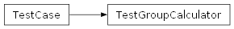

test.groupcalculator_test.TestGroupCalculator
- class test.groupcalculator_test.TestGroupCalculator(methodName='runTest')[source]
Test cases for the GroupCalculator class.
This test suite verifies the functionality of the GroupCalculator class including initialization, group creation, and group management.
setUp()Set up test fixtures before each test method.
Test initialization with valid parameters.
Test initialization with invalid parameters.
Test resetting groups.
Test creating groups.
Test creating multiple rounds of groups.
Test the can_repeat method.
Test getting current groups.
Test getting all groups.
Test with usable_indexes=True.
Test visualize_groups method.
Test that people are uniquely assigned across rounds.
- __init__(methodName='runTest')
Create an instance of the class that will use the named test method when executed. Raises a ValueError if the instance does not have a method with the specified name.
Methods
__init__([methodName])Create an instance of the class that will use the named test method when executed.
addClassCleanup(function, /, *args, **kwargs)Same as addCleanup, except the cleanup items are called even if setUpClass fails (unlike tearDownClass).
addCleanup(function, /, *args, **kwargs)Add a function, with arguments, to be called when the test is completed.
addTypeEqualityFunc(typeobj, function)Add a type specific assertEqual style function to compare a type.
assertAlmostEqual(first, second[, places, ...])Fail if the two objects are unequal as determined by their difference rounded to the given number of decimal places (default 7) and comparing to zero, or by comparing that the difference between the two objects is more than the given delta.
assertCountEqual(first, second[, msg])Asserts that two iterables have the same elements, the same number of times, without regard to order.
assertDictEqual(d1, d2[, msg])assertEqual(first, second[, msg])Fail if the two objects are unequal as determined by the '==' operator.
assertFalse(expr[, msg])Check that the expression is false.
assertGreater(a, b[, msg])Just like self.assertTrue(a > b), but with a nicer default message.
assertGreaterEqual(a, b[, msg])Just like self.assertTrue(a >= b), but with a nicer default message.
assertIn(member, container[, msg])Just like self.assertTrue(a in b), but with a nicer default message.
assertIs(expr1, expr2[, msg])Just like self.assertTrue(a is b), but with a nicer default message.
assertIsInstance(obj, cls[, msg])Same as self.assertTrue(isinstance(obj, cls)), with a nicer default message.
assertIsNone(obj[, msg])Same as self.assertTrue(obj is None), with a nicer default message.
assertIsNot(expr1, expr2[, msg])Just like self.assertTrue(a is not b), but with a nicer default message.
assertIsNotNone(obj[, msg])Included for symmetry with assertIsNone.
assertLess(a, b[, msg])Just like self.assertTrue(a < b), but with a nicer default message.
assertLessEqual(a, b[, msg])Just like self.assertTrue(a <= b), but with a nicer default message.
assertListEqual(list1, list2[, msg])A list-specific equality assertion.
assertLogs([logger, level])Fail unless a log message of level level or higher is emitted on logger_name or its children.
assertMultiLineEqual(first, second[, msg])Assert that two multi-line strings are equal.
assertNoLogs([logger, level])Fail unless no log messages of level level or higher are emitted on logger_name or its children.
assertNotAlmostEqual(first, second[, ...])Fail if the two objects are equal as determined by their difference rounded to the given number of decimal places (default 7) and comparing to zero, or by comparing that the difference between the two objects is less than the given delta.
assertNotEqual(first, second[, msg])Fail if the two objects are equal as determined by the '!=' operator.
assertNotIn(member, container[, msg])Just like self.assertTrue(a not in b), but with a nicer default message.
assertNotIsInstance(obj, cls[, msg])Included for symmetry with assertIsInstance.
assertNotRegex(text, unexpected_regex[, msg])Fail the test if the text matches the regular expression.
assertRaises(expected_exception, *args, **kwargs)Fail unless an exception of class expected_exception is raised by the callable when invoked with specified positional and keyword arguments.
assertRaisesRegex(expected_exception, ...)Asserts that the message in a raised exception matches a regex.
assertRegex(text, expected_regex[, msg])Fail the test unless the text matches the regular expression.
assertSequenceEqual(seq1, seq2[, msg, seq_type])An equality assertion for ordered sequences (like lists and tuples).
assertSetEqual(set1, set2[, msg])A set-specific equality assertion.
assertTrue(expr[, msg])Check that the expression is true.
assertTupleEqual(tuple1, tuple2[, msg])A tuple-specific equality assertion.
assertWarns(expected_warning, *args, **kwargs)Fail unless a warning of class warnClass is triggered by the callable when invoked with specified positional and keyword arguments.
assertWarnsRegex(expected_warning, ...)Asserts that the message in a triggered warning matches a regexp.
countTestCases()debug()Run the test without collecting errors in a TestResult
defaultTestResult()doClassCleanups()Execute all class cleanup functions.
doCleanups()Execute all cleanup functions.
enterClassContext(cm)Same as enterContext, but class-wide.
enterContext(cm)Enters the supplied context manager.
fail([msg])Fail immediately, with the given message.
id()run([result])setUp()Set up test fixtures before each test method.
setUpClass()Hook method for setting up class fixture before running tests in the class.
shortDescription()Returns a one-line description of the test, or None if no description has been provided.
skipTest(reason)Skip this test.
subTest([msg])Return a context manager that will return the enclosed block of code in a subtest identified by the optional message and keyword parameters.
tearDown()Hook method for deconstructing the test fixture after testing it.
tearDownClass()Hook method for deconstructing the class fixture after running all tests in the class.
Test the can_repeat method.
Test creating groups.
Test creating multiple rounds of groups.
Test getting all groups.
Test getting current groups.
Test initialization with invalid parameters.
Test initialization with valid parameters.
Test that people are uniquely assigned across rounds.
Test resetting groups.
Test with usable_indexes=True.
Test visualize_groups method.
Attributes
longMessagemaxDiff